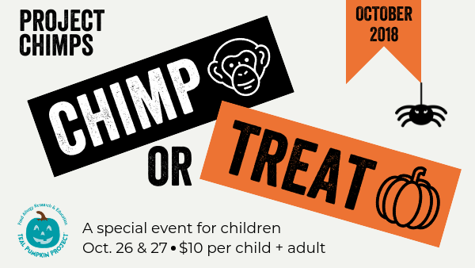
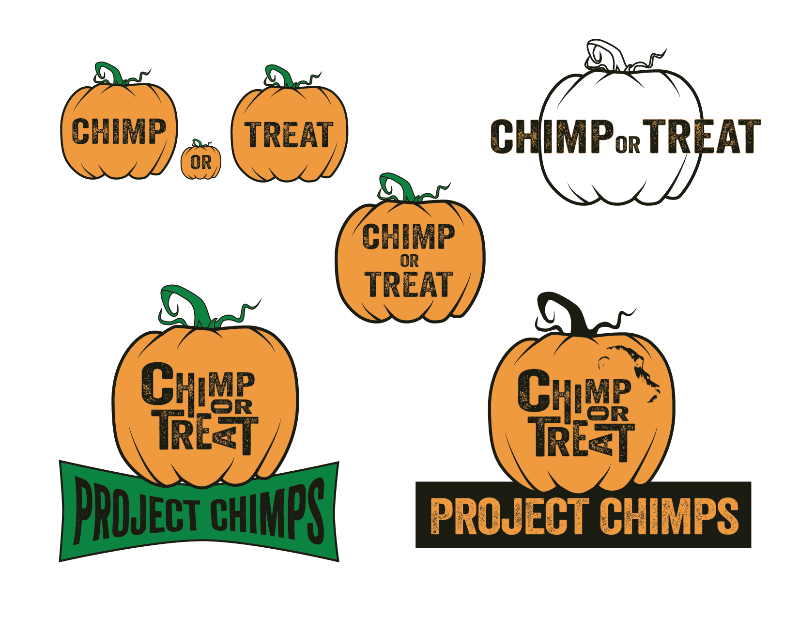
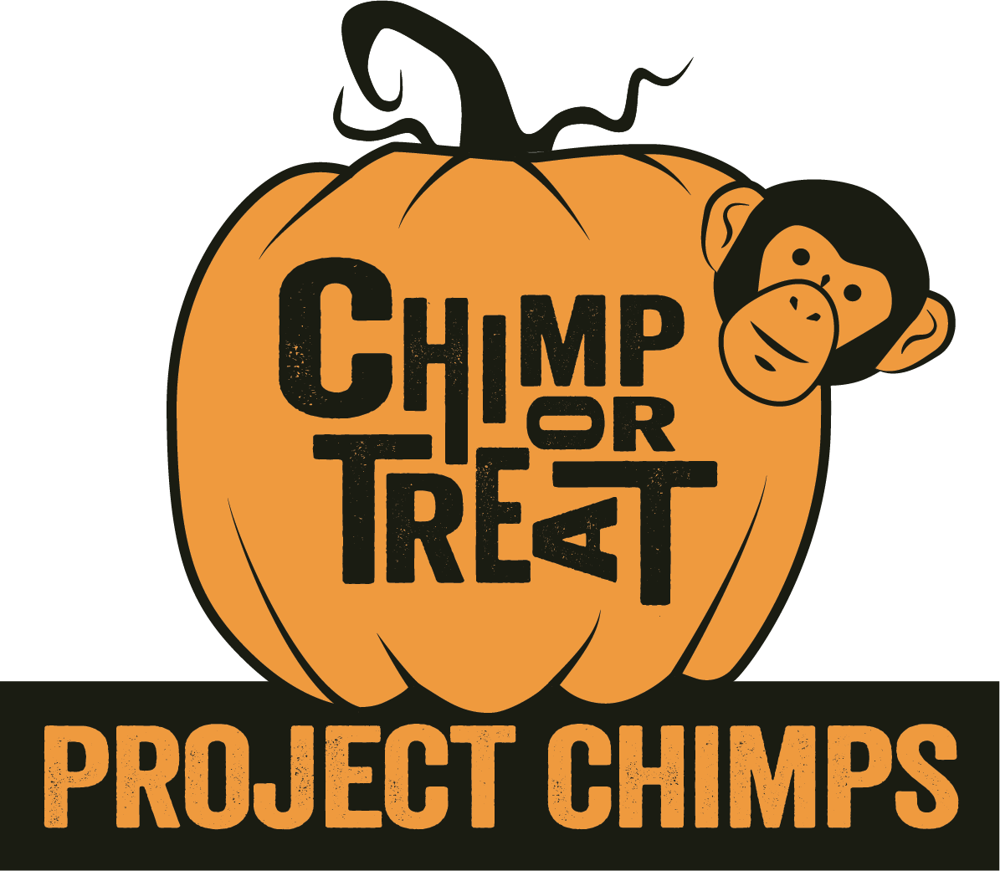
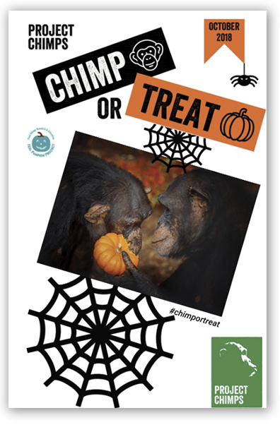
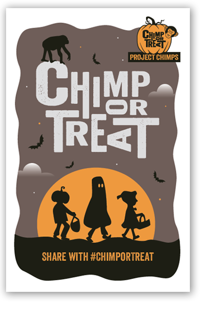
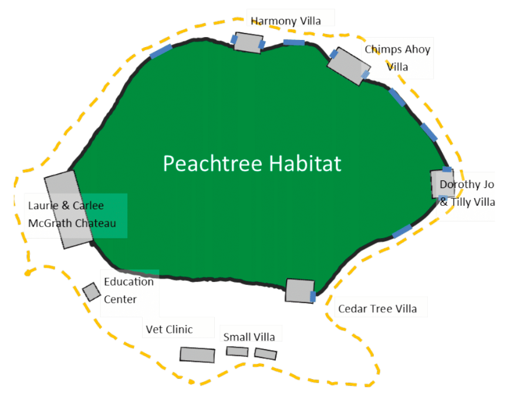
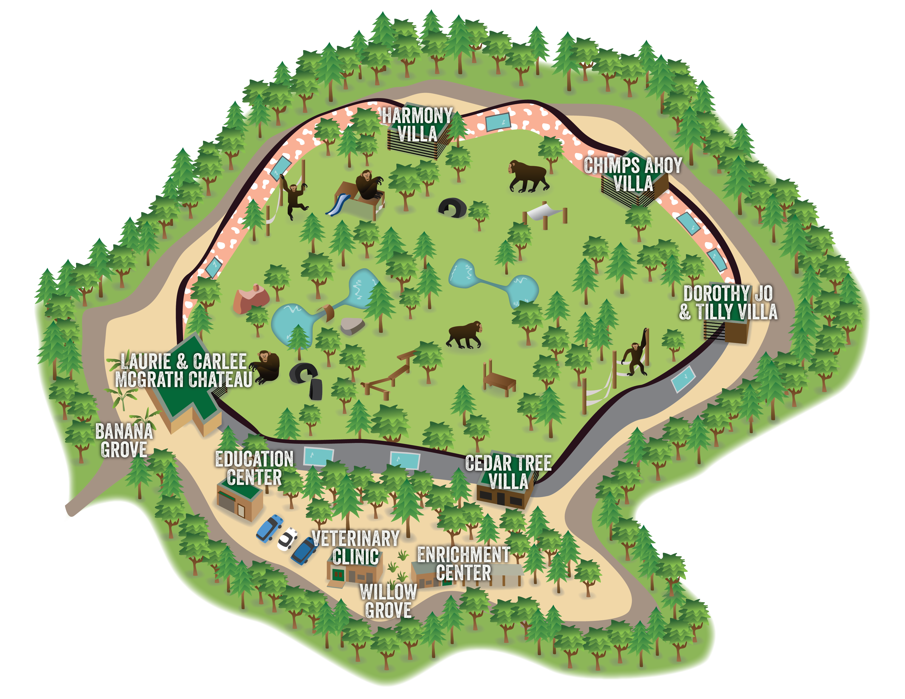

Project Chimps Chimp or Treat
Rebrand Design
As the graphic design intern at Project Chimps, I am responsible for rebranding the Chimp or Treat event. This is one of only three events on site that are open to the public, and it features trick or treating, games, and family tours. Since the main event is geared towards kids and familes, we wanted the logo to be fun and inviting, but also adhere to brand standards.
Original Logo
Design Process
In my design process, I wanted to use a pumpkin because it felt like just enough of a "spook" factor for a kids-friendly event. I also wanted experiment with type to create a new image and needed to incorporate a chimpanzee in some way, as they are the main reason people buy tickets.
Final Logo
The final logo uses two colors within our brand standards and simple modification of a brand typeface. Warping the type seemed to be too far out of the brand standards, but I decided that rotated letters were okay. I also added the chimp icon to be more playful.
Banner
In the event banner, I used a similar text treatment on the event information as I did in the logo. I needed a lighter background for printing ramifications, so I added a slight orange radial gradient to frame the information. I used a darker image and text for higher contrast.
Brochure
In keeping with the Chimp or Treat brand, I used the orange and umber colors featured in the logo as the primary colors to grab the reader's attention in text headings. All primary headings have a rounded background border as this is part of the Project Chimps brand standards. All assets and grids are my original creations.
Before
After
The cover page was quite fun to make as we wanted the art to be spooky but still kid-friendly and playful. At first, the chimp silhouette that is on top of the "C" was one of the three trick-or-treaters under the sun. But, then we decided that this may be misinforming parents who may be concerned about the safety of their kids when near the chimps. To keep the atmosphere of the drawing but show that the event happens during the day, I went with the violet color for a background.
Map - Before
Map - After
As part of a separate ongoing assignment, I am creating a map of the 6-acre Peachtree Habitat and surrounding site grounds. I replaced the map in an old version of the brochure which was just a tracing of a satellite image of the grounds with the map I am making. With the advisement of the managers at Project Chimps, I decided which information was necessary to show in the event map, and then added play structures and chimps to make it more exciting. We decided on six chimps in the habitat. Since the chimps spent their whole life in research labs, many of them prefer to be inside and we don't force them to go outside. We wanted to show enough chimps to indicate that they are never alone in the habitat and can be social, but also show that they have space and are never crammed into the habitat. All the assets are my own creations in Illustrator.
Tools Used: Adobe Illustrator & InDesign